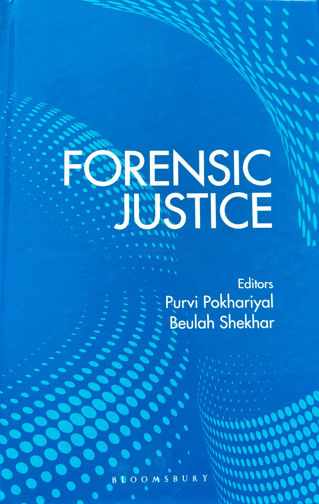

Research & Innovation

Books
- Artificial Intelligence and Legal Implication (Edited), Eastern Book Company, 2020
- Analysis of Judicial Approach on Forensic Evidence (Edited), NFSU, 2023
- Forensic Justice: A Global Perspective (Edited), Taylor & Francis, 2024 (Read here)
Research Guidance
- Supervised 15 Ph.D. Scholars
- Guided 50 LL.M. dissertations
- Principal Investigator in various research projects
- Undertaken research projects on topics like Plea Bargaining, Juvenile Justice, and High Court contributions to Public Interest Litigation
Innovation in Legal Education
- Designed B. Sc.LL.B. (Data Science and Law) Five-year Integrated Programme, 2021
- LLM in Legal Pedagogy and Research Programme, 2013
- LL.M. in Cyber Crime Investigation and Cyber Law Programme, 2021
Research Articles & Papers

- Pokhariyal, P., & Dubey, D. (2023). Role of Community in the Sustainable Soil Management: A Legal Perspective. In Soil Law and Governance in India (pp. 173-184). Cham: Springer International Publishing (Read here).
- Pokhariyal, P., & Dubey, D. (2023). The Imperative of Forensic Justice in Modern Legal Systems: A Comprehensive Analysis. In Forensic Science and Human Rights (pp. 3–21). National Human Rights Commission (Read here).
- Pokhariyal, P. (2023). Legal Tech Education in Digital Age: Prospects and Challenges. Uzbek Journal of Law and Digital Policy, 1(February 20-21, 2023) (Read here).
- Mishra, A. K., Anand, S., Debnath, N. C., Pokhariyal, P., & Patel, A. (Eds.). (2023). Artificial Intelligence for Risk Mitigation in the Financial Industry. Scrivener Publishing.
- Pokhariyal, P., Kashyap, A. K., & Prasad, A. B. (Eds.). (2020). Artificial Intelligence: Law and Policy Implications. Institute of Law, Nirma University.
- Pokhariyal, P., & Kotwal, A. (2022). ONE STEP FORWARD, TWO STEPS BACKWARD? An Analysis of the Revocation of Article 370 under Constitutional Law, Federalism and International Law. Journal of Positive School Psychology, 8880-8897 (Read more).
- Bhagat, P., & Pokhariyal, P. (2017). ESSENTIALITY OF FREE AND FAIR ELECTIONS IN DEMOCRACY AND INDIAN CONSTITUTIONAL COMMITMENT TOWARDS THIS. Ilkogretim Online - Elementary Education Online, 19(4), 3414–3430.
- Bhagat, P., & Pokhariyal, P. (2018). Electoral Offences in Indian Laws. Ilkogretim Online - Elementary Education Online, 19(4), 4266–4274.
- Bhagat, P., & Pokhariyal, P. (2020). Behavioral Changes Needed in Elections Systems. Vidhya Bharti International Interdisciplinary Research Journal, 13(1), L-106933/2021.
- Bhagat, P., & Pokhariyal, P. (2020). CONCEPTUAL REFORMS ONE NATION – ONE ELECTION. Ilkogretim Online - Elementary Education Online, 19(4), 3929–3935 (Read here).
- Dubey, D. & Pokhariyal, P. (2021). Citizenship and the judicial intervention: a comparative study in India and USA. Turkish Online Journal of Qualitative Inquiry, 12(8), 5181-5188 (Read more).
- Patel, F., & Pokhariyal, P. (n.d.). Freedom Of Speech and Expression with Special Reference to Freedom of the Press. GNLU Journal of Law, Development, and Politics, ISSN-0975-0193.
- Patel, F., & Pokhariyal, P. (2019). Critical Analysis of Freedom of Press Under the Indian Constitution. All India Reporter (AIR).
- Pokhariyal, P., & Gupta, R. (2019). Responsible Business Conduct: United States of America’s Approach to Address Their National Action Plan on Business and Human Rights. Journal of Critical Reviews, 7(19), ISSN 2394-5125.
- Pokhariyal, P., & Gupta, R. (2020). Business and Human Rights Conundrum: A Case of Corporate Social Responsibility in India. Journal of National Human Rights Commission, 19.
- Pokhariyal, P., & Kumari, R. (2020) A CRITICAL STUDY OF THE IMPLEMENTATION OF LAW REGULATING SOLID WASTE MANAGEMENT IN GANDHINAGAR MUNICIPAL CORPORATION

.png) purvipokhariyal@gmail.com
purvipokhariyal@gmail.com
.png) +91 99988 49689
+91 99988 49689
 2024
Prof. (Dr.) Purvi Pokhriyal
2024
Prof. (Dr.) Purvi Pokhriyal